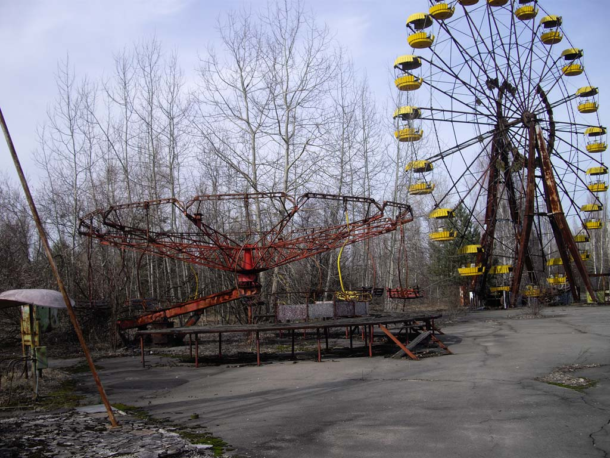

À Pripiat c'est l'éclate!
Si au premier abords la ville de Pripiat vous semble être calme il n'en est rien.
De jour comme de nuit la ville présente toutes sortes d'activités, tout le monde
trouvera chaussure à son pied si tenté que celui-ci n'est pas encore muté.

Comme tout le monde vous avez envie de vous amusez! Pour que ce séjour soit réussi
aller au parc d'attractions, vous y trouverez forcément votre compte soit pour vous,
soit en vous débarrassant de vos enfants, il y a peu chances qu'on aillent les
récupérer pour vous. Ce parc séduit tout d'abord par son style architecturale rétro
qui n'est pas sans rappeler celle des voies ferrés durants la seconde guerre mondiale.